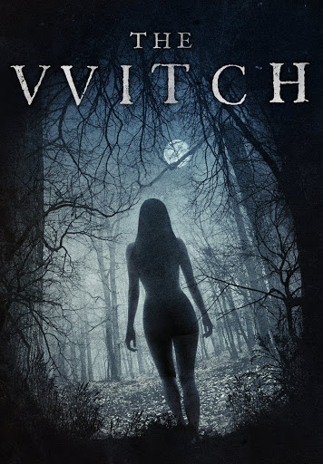

The Witch

Ficha Técnica
| Director | Robert Eggers |
|---|---|
| Año | 2015 |
| Género | Terror |
Lista Reparto
- Anya Taylor-Joy
- Ralph Ineson
- Harvey Scrimshaw
Sinopsis peli
William, su esposa y sus cinco hijos son desterrados de su pueblo y se ven obligados a construir un nuevo hogar a las afueras de un inhóspito bosque. El delito de William ha sido acusar a los miembros de su comunidad de no ser verdaderos cristianos y proclamar que él es el único que predica el verdadero Evangelio.
Reseña peli
6,3/10